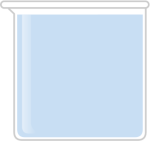

Beaker Tutorial
Diagram
Given a beaker image, e.g.:

The parameters to the beaker constructor would correspond to the image as labeled below:
x solution_x
y_| |----solution width----|
:'''''''''''''''''''''''':
.,......................; __ solution_y
. ' |
. ' |
. ' |
. ' |
. ' | solution
. ' | height
. ' |
. ' |
. ' |
.'....................'. _|_x&yare the coordinates where the image will be placed.solution_x&solution_yare optional offsets tox&ythat account for possible space in the image before the virtual solution/liquid bound begins.solution_width&solution_heightare the width and height of the virtual solution/liquid within the beaker image.
Example Usage
Instantiation
// Create a 100x100 beaker at (0,0)
var beaker = new Beaker(p);
// Create a 40x80 beaker at (0,0)
var width = 40;
var height = 80;
var beaker = new Beaker(p,width,height);
// Create a 40x80 beaker at (50,50)
var width = 40;
var height = 80;
var x = 50;
var y = 50;
var beaker = new Beaker(p,width,height,x,y);
// Create a 40x80 beaker at (50,50) with a particle boundary inset
// 5px left and up from where the image would start.
var width = 40;
var height = 80;
var x = 50;
var y = 50;
var solution_x = 5;
var solution_y = 5;
var beaker = new Beaker(p,width,height,x,y,soluton_x,solution_y);